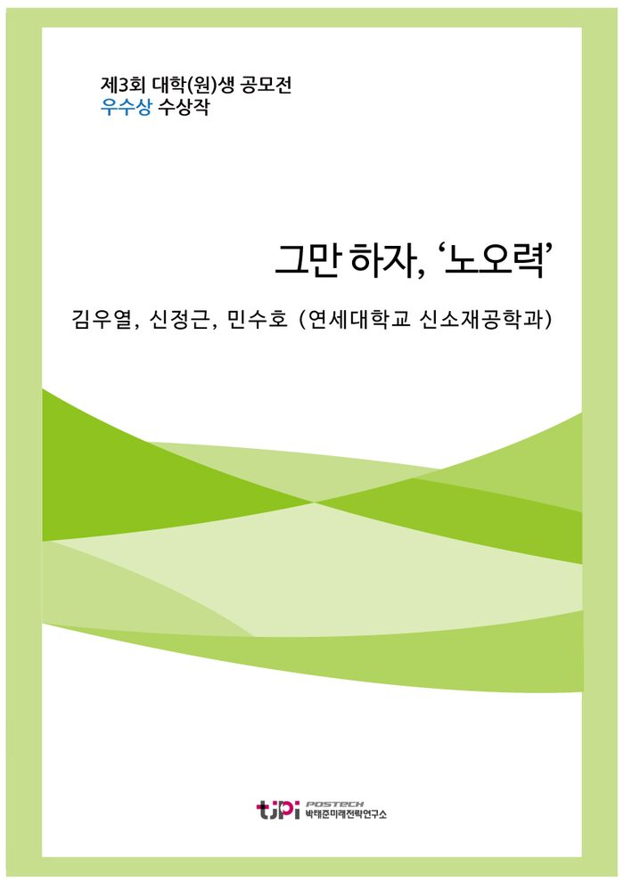

저자 김우열, 신정근, 민수호 (연세대학교 신소재공학과)보도일 2016.07.20

요 약
현재 우리는 ‘노오력’의 덫에 빠져있다
. 사회 구성원들이 행복하지 않은 이유는 행복을 느끼는 경험이 부족함에서 비롯된 것이다. 어릴 때부터 ‘노오력’으로 대변되는 경쟁의 톱니바퀴 사이에 끼여 있는 탓에 무엇을 해야 행복하고, 또 그것을 위해 어떻게 실천해야 할지 고민할 시간이 없다. 이 톱니바퀴 속에서 우리는 계속해서 고통받고 있다.
필자들은 행복이 무엇인가에 관한 논의 끝에, 점점 마찰이 심해지기만 하는 ‘노오력’의 톱니바퀴를 다시 재정비하고 행복이 무엇인가에 대해 다시 한번 성찰해보는 것이 행복한 한국사회로 가는 첫걸음이라고 결론 지었다.
단순한 과열 경쟁이 아닌 경쟁의 선순환의 구조를 만들어낼 수 있을 때 비로소 행복한 한국사회에 한걸음 다가갈 수 있을 것이다.
목 차
1. 우리는 과연 행복하기 위해 노력 중인가
2. ‘노오력’ 중독, 자책이 지배하는 사회
3. ‘노오력’의 강요, 그 이면
1) 목표의식의 상실이 가속화되는 사회
2) 불편한 2인자들, 살리에리 증후군(Salieri syndrome)
4. 우리는 왜 이토록 ‘노오력’하게 되었는가?
5. ‘노오력’에서 벗어나야 하는 이유
1) 금수저와 흙수저
2) 1등만 모여 사는 사회가 아니다
6. ‘노오력’에서 벗어나기 위한 대책
1) 사회안전망의 제도적 구축
2) 평범함이 열등함은 아니다
7. 맺는 말
내 용
[2016 청년 에세이 우수상] 그만 하자, ‘노오력’
김우열, 신정근, 민수호 (연세대학교 신소재공학과)
1. 우리는 과연 행복하기 위해 노력 중인가
21C 한국의 모습은 바쁘다. 어린아이부터 어른까지 모두 하루 24시간을 빠듯하게 살아간다. 그러나 이들의 가슴 뻐근한 하루 끝에 남는 것은 보람의 결실이 아니라 차츰 누적되어가는 피로이다. 각종 연구결과가 이것을 뒷받침한다. 2014년 보건복지부에서 발표한 ‘2013년 한국 아동종합실태조사’에 따르면 국내 아동의 삶의 만족도는 100점 만점에 60.3으로 경제협력개발기구(OECD) 국가 중 최하위를 기록했다. 전문가들은 이의 원인으로 여가활동의 부족, 긴 학업시간을 꼽는다. 즉 하루의 상당 시간을 학업에만 몰두하라는 압력이 아이들의 행복을 짓누르고 있는 것이다. 이런 압력은 극단적인 사례로 나타나기도 한다. 실제로 2013년 전남 장흥에서는 성적 하락으로 고민하던 초등 5년생이 아파트 옥상에서 추락사하는 안타까운 사건이 발생하기도 했다.
이러한 청소년기부터의 빠듯한 삶은 성년이 되어서도 뚜렷한 결실로 나타나지 않는다. 빠듯한 삶을 버텨왔어도 한층 더 팽팽한 삶의 밧줄 위에서 줄타기를 해야 한다. 어느 순간부터 대학생들의 생활을 삼켜버린 무한 스펙 경쟁이 그것이다. 이는 청년 실업의 문제가 점점 더 파열음을 내기 시작하면서 심화되고 있다. 한국의 국민들은 쉴 새 없이 달려왔지만 정작 한국 사회의 모습은 그에 상응하여 진일보하지 못하고 있다. 특히 글로벌 경기 침체 속에서 각종 경기 지표는 악회되고 있고 앞으로도 뚜렷한 반등의 기미를 보이기 어려워 보인다.
아리스토텔레스의 말처럼 삶의 궁극적 목적이 행복이고 또한 사회는 개개인의 삶을 풍요롭게 만들기 위해 존재하는 것이라면 이러한 노력들은 무슨 의미를 지니는 것일까?
분명 행복하기 위해 노력하고 있지만 그 과정 속에서 오히려 행복과 더욱 멀어지는 모순적인 모습이 나타나고 있다. 열심히 달려가고는 있지만 어떠한 목적을 위해서라기보다 원인 모를 불안이라는 채찍에 쫓기는 형세다. 본 에세이는 이러한 노력에 대해 문제의식을 가지고 접근하기 위해 쓰여 졌으며, 행복한 한국사회를 위한 나름의 고찰 결과와 제언에 대해 서술한다.
2. ‘노오력’ 중독, 자책이 지배하는 사회
○○대학교 3학년 1학기에 재학 중인 A씨(24)는 방학을 맞아 교환학생 준비를 위해 영어학원에 다니고 있다. 그러던 중 A씨는 집으로 날라온 참담한 ‘고지서’를 보고 망연자실해졌다. 다름 아닌 성적표다. 매 강의 시간마다 교수님 말씀을 토씨 하나 빠뜨리지 않고 받아 적었고, 강의도 녹음하여 실수로 놓친 부분까지 빠짐없이 채워서 공부했지만 돌아온 것은 불만족스러운 성적표다. 한동안 충격에서 헤어 나오지 못하던 A씨는 이내 마음을 추스른 ‘척’ 하면서, ‘내 노력이 부족했던 탓이야’라고 생각하기로 결심했다.
위 일화는 필자와 비슷한 연령대에 있는 가상의 인물을 상정하여 작성한 것이다. 비현실적으로 느껴지는가? 아마도 정도의 차이는 있겠으나 대학생들이라면 –심지어 일부 중고등학생들 조차도- 대부분 공감할 수 있는 일화일 것이다. 필자가 이 일화에서 지적하고 싶은 가장 큰 문제는 ‘척’과 ‘자기 탓’이다. 우리는 대개 불만족스러운 상황에 직면했을 때 괜찮은 척 하면서 자기 탓으로 돌리려는 경향이 있다. 이것은 소위 ‘남의 탓 하지 말라’로 대변되는 냉철한 자기성찰과는 성질이 매우 다르다. 그들은 이미 –어찌 보면 ‘비합리적’일 정도로– 충분히 ‘노오력’ 했기 때문이다. 개개인들의 ‘노오력’은 오히려 ‘자조’와 ‘자학’의 씨앗을 잉태시키고 있다.
“하늘이 감동할 만큼 노력해 봤나요?”… 흙수저 탓만 하는 세대에 일침(동아일보)
얼마 전 SNS를 뜨겁게 달군 기사의 제목이다. 기사의 내용은 잘 나가던 삼성맨이 모든 것을 포기하고 미국 월스트리트 금융업에 뛰어든 뒤, ‘하늘이 감동할 만큼’ 노력하여 결국엔 큰 성공을 거뒀다는 이야기다. 언뜻 보면 ‘지성이면 감천’ 류의 감동적인 성공 스토리가 아닐까 싶지만, 이 기사는 수많은 젊은이들에게 좌절감을 안겨주었다. 이유는 그의 아버지가 삼성생명 사장과 삼성카드 부회장을 지냈던 황학수 씨였기 때문이다. ‘수저론’이라는 담론이 횡행하는 요즈음, 이러한 기사들은 젊은이들에게 희망을 주기보다는 오히려 자존감을 앗아갈 뿐이었다. 그러나 단순히 자존감만 앗아간 것 또한 아니었다. 잘못된 것을 잘못되었다고 말할 수 있는 용기도 앗아갔다. 젊은 세대들은 소수의 승자와 다수의 패자를 낳을 수밖에 없는 사회 구조를 비판하기보다는 오히려 자신의 노력이 부족했다고 자책할 뿐이다. 해방 이후의 눈부신 경제 발전 속에서 이뤄진 수많은 성공스토리에 취한 것일까? 우리는 모두 누구나 노력하면 성공할 수 있다는 환상에 취한 듯하다. 지금부터 어쩌면 실재하지 않을지도 모르는 목적을 향한 맹목적인 ‘노오력’의 그늘에 대해 살펴보겠다.
3. ‘노오력’의 강요, 그 이면
1) 목표의식의 상실이 가속화되는 사회
난 지금 무엇을 찾으려고 애를 쓰는 걸까
난 지금 어디로 쉬지 않고 흘러가는가
난 내 삶의 끝을 본적이 있어 내 가슴속은 갑갑해졌어
내 삶을 막은 것은 나의 내일에 대한 두려움
반복됐던 기나긴 날 속에 버려진 내 자신을 본 후
나는 없었어 그리고 또 내일조차 없었어
내겐 점점 더 크게 더해갔던 이 사회를 탓하던 분노가
마침내 증오가 됐어 진실들은 사라졌어 혀 끝에서 – 서태지 ‘Come back home’
위 노래는 1995년 발표된 서태지의 ‘Come back home’이다. 지금으로부터 20년도 더 지났지만, 가사를 읽어보면 과거의 일이라고 여겨지는 것이 아니라 씁쓸한 미소가 새어 나오게 된다. 왜냐하면 현재 우리의 이야기이기 때문이다. 즉 20년이 지나도록 동일한 문제에 대하여 개선이 이루어지기는커녕 오히려 악화된 상황이 아닐 수 없다.
많은 청년들이 이미 별다른 목표의식이 없는 상태로 ‘노력’만을 강요받는다. 목표의식의 부재는 ‘N포 세대’라는 말로 잘 대변된다. 온라인 취업 포털 ‘사람인’의 설문조사에 따르면 2, 30대 남녀 1675명 중 1156명(69%)이 스스로를 N포 세대라고 칭했다고 한다. ‘N포 세대’의 심각성은 이 문제가 단순히 특정 집단만의 이슈가 아니라는 데 있다. 이는 오랜 기간 대다수의 젊은 세대들이 공유하고 있던 좌절감이 비로소 표면화된 것으로 보아야 한다. 이러한 상황에서, 이미 성공한 기성세대들에 의해 끊임없이 주입되는 ‘성공 신화’는 이미 발전의 원동력으로 작용하지 못한지 오래다. 우리는 성공신화를 들으면서 오히려 자존감을 희생양 삼아 소모적인 경주를 하게 되었을 뿐이다.
‘난 지금 어디로 쉬지 않고 흘러가는가’ 라는 가사를 보자. 우리는 지금 어디를 향해 가고 있는가? 우리는 무엇을 위해 이렇게 ‘노오력’하는 걸까? 이러한 질문에 명쾌하게 답할 수 있는 젊은이들이 얼마나 있을까. 아마도 더 이상 ‘자신’도, ‘내일’도 없다며 자책하는 이들이 대다수일 것이다. 어쩌면 노랫말대로 자책의 종말은 마침내 증오가 될지도 모르고, 심지어 진실조차 사라질 수도 있다. 우리는 한번 스스로에게 자문해볼 필요가 있다. “우리가 언제 노력하지 않았던 적이 있던가?”
2) 불편한 2인자들, 살리에리 증후군(Salieri syndrome)
<아마데우스> 라는 영화가 있다. 이 영화는 살리에리가 당대의 천재 모차르트에게 극심한 열등감을 느낀 나머지 모차르트를 독살한다는 내용을 담고 있다. 비록 정사(正史)는 아니지만 이 영화는 ‘살리에리 증후군’이라는 용어를 유행시켰는데, 이는 주로 본인 주변의 사람들로부터 열등감을 느낀 나머지 무력감과 좌절감을 느낀다는 뜻으로 사용된다. TV 프로그램 ‘무한도전’의 정형돈이 언급하면서 유명해진 용어이기도 한데, 정형돈은 그 프로그램에서 종종 ‘평범한 사람’을 대변하는 역할을 담당하곤 했다.
사실 정형돈의 말처럼 사회를 이루는 절대 다수는 평범한 사람들이다. 그러나 한국 사회는 모두가 특별해지기를 요구한다. 모든 부모가 자식들이 ‘노오력’을 통해 서울대에 입학하길 원하며, 또 그럴 수 있다고 강하게 믿고 있다. 문제는 이러한 믿음 그 자체가 아니라, 모두가 똑같은 결승점을 향해 달리고 있다는 사실이다. 이러한 의식은 대개 어린 시절부터 주입되기 때문에 세대에 걸쳐 전승되는 것이 일반적이며, 그것이 지난 수 십년 간 우리나라의 과열 경쟁을 떠받치는 하나의 기둥이었다. 이 과정에서 결승점에 도착하지 못한 대다수의 사람들은 좌절감을 느낄 수밖에 없었다. 근래 들어 유행하는 ‘어차피 안 될 거야’식의 자학 놀이는 이러한 좌절감이 몇 세대에 누적되어 발현된 것으로 이해되어야 한다.
과거에 (아직도 가끔씩 회자되는) ‘1등만 기억하는 더러운 세상’이라는 표현이 유행한 적이 있었다. 이 표현은 우리나라가 전체적으로 살리에리 증후군에 시달리고 있음을 암시하고 있다. 사실 소수의 1인자와 다수의 2인자가 생겨나는 것은 어찌보면 자연적인 현상임에도 우리는 그 사실을 불편해하기 바쁘다. “왜 나는 저렇게 되지 못하는가?”, “내 노력이 부족해서 그런 거야” 요컨대, 사실은 문제가 아닌 것들이 문제로 취급되고 있는 현실이다.
4. 우리는 왜 이토록 ‘노오력’하게 되었는가?
중세까지 사람들은 계급 기반 사회에 살았다. 왕과 평민은 태어나면서부터 삶이 정해져 있었고, 평민은 아무리 ‘노력’해도 계급의 한계를 넘어설 수는 없었다. 그러나 근대 사회가 가져온 시민 사회의 태동은 어느 정도의 노력을 통해 개인의 신분을 넘어서는 성공을 가능케 해주었다. 한편, 근대 사회가 발전하면서 노력은 점차 단순히 성공을 위해 필요한 것이 아닌 자아실현을 위해서도 필수적인 것이 되어갔다. 즉 사람들은 단순한 성공을 넘어 자신이 하고 싶은 일을 하면서 자아를 실현시킬 수 있게 된 것이다. 그러나 이러한 현상이 몇 세대에 걸쳐 지속되면서 노력은 점차 개인의 선택사항이 아니라 하나의 의무로서 암묵적으로 강요받게 되었다. 그 결과는 다름 아닌 우리가 살아가는 현재다. 경쟁이 극에 치달으면서 오늘날의 우리 사회는 노력 이상의 ‘노오력’을 요구하는 사회가 되었다.
우리는 언제부터 노력 이상의 ‘노오력’을 요구받게 되었는가? 1998년 IMF 위기와, 2008년 글로벌 금융 위기를 겪으면서 평생직장의 개념은 사라졌고, 고용의 불안정성은 높아졌다. 갑작스런 경제위기는 사람들에게 생존 경쟁에서 살아남기 위한 노력을 강요하였다. 소위 좋은 직장을 얻기 위한 첫 관문은 명문대 진학이 되었다. 이를 위해 아이들은 어려서부터 한 달에 수 십 만원에서 비싸게는 수 백 만원 까지 내면서 영어 유치원에 다니고, 초등학교 때부터 각종 학원에 다니기 시작한다. 심지어 명문대에 진학한 이후에도 취업 시장에서 살아남기 위해 학점 관리, 스펙 관리를 해야만 한다. 경쟁에서 승리한 자만이 살아남고, 패자에겐 보상이 없는 적자생존의 사회가 되면서 노력은 더 이상 성공이나 자기실현의 차원이 아닌 생존을 위한 문제가 되었다. 그리고 우리 모두는 차츰 누군가를 ‘짓밟고’ 일어서 모든 열매를 독식하기를 원하게 되었다.
이처럼 적자생존과 승자독식의 사회에서 개개인들은 자기 파괴적인 ‘노오력’을 요구 받게 되었다. 경제학적으로 봤을 때, 자아실현을 위한 노력은 기대효용과 비용의 차이를 적절하게 유지시킴으로써 개인의 행복에 기여한다. 반면 ‘노오력’은 기대효용보다 오히려 비용이 더 크기 때문에, 노력할수록 역설적으로 행복으로부터 멀어지는 상황을 초래한다. 문제는 우리가 ‘노오력’하면 할수록 그 굴레에서 벗어나기 어렵다는 것이다. ‘노오력’이라는 것은 늪과도 같아서 한번 빠지면 벗어나기 어렵다. 그러나 전술하였듯 우리의 삶의 목적이 행복이라면 반드시 이 늪에서 탈출해야 한다.
5. ‘노오력’에서 벗어나야 하는 이유
1) 금수저와 흙수저
우리 모두는 사회가 발전하면서 계급 제도가 사라진 것으로 굳게 믿고 있었다. 그러나 현대 사회를 잘 들여다보면 그렇지 않다. 이른바 경제력을 바탕으로 한 ‘흙 수저, 금 수저’와 같은 ‘신계급제도’가 우리 사회에 다시 생겨난 것이다.
흙 수저에서 금 수저로 올라가는 것과 같이 경제적으로 낮은 계층에서 높은 계층으로 올라가는 계층 이동의 가능성은 점차 낮아지고 있다. 이는 사회가 폐쇄적이고 고착화 되어 감을 의미한다. 실제로 김낙년 교수의 ‘한국에서의 부와 상속’ 논문을 보면, 개인이 노력해서 버는 소득보다 물려받은 재산의 중요성이 점차 커지고 있음을 알 수 있다.
<그림 1> 연간 상속액의 국민소득 대비 비율
<그림 2> 부의 축적 중 상속이 기여한 비중
<표1, 2 원본 PDF 참고>
위 그래프는 사람들이 쉼 없이 노력 함에도 사회가 점점 노력만으로는 자신의 경제적 처지를 극복할 수 없는 방향으로 나아가고 있는 것을 보여준다. 이런 사회적 상황에서 계속되는 소모적인 ‘노오력’은 성공이나 자기실현에 기여하기 보다는 오히려 개인들을 파괴로 이끈다.
‘노오력’이 부족하다고 청년들을 꾸짖는 사회에서는 노력의 정도가 그 사람이 이룬 성과에 의해서만 평가된다. 다시 말해 성과를 내지 못한 것이 사회 구조적 문제 때문이 아니라 그 사람의 노력이 부족했기 때문인 것만으로 인식된다는 것이다. 그러나 모든 문제를 개인의 ‘노오력’의 차원으로 환원시키는 것은 매우 위험한 발상이다. 실제 통계 자료들이 사회 구조적 문제를 여실히 보여주고 있다. 그런데도 모든 결과의 원인을 노력이 부족했다고 치부해버리면 결국에는 사회 전체가 ‘늪’에 빠져버리게 될 수 밖에 없다.
2) 1등만 모여 사는 사회가 아니다
물론 노력을 통한 경쟁은 개인과 사회의 발전에 원동력이 될 수 있으므로 분명 필요한 것이다. 서로 자극을 주고받으며 더 좋은 방향으로 발전할 수 있기 때문이다.
그러나 경쟁의 승자가 모든 것을 독식하는 모습을 보인다면 어떻게 될까? 우리 사회는 점차 승자 독식의 사회로 치닫고 있다. 승자의 노력만을 인정해주고, 패자의 노력은 아무도 기억해주지 않는 비인간적인 사회가 되어가는 것이다.
그러나 사회는 1등들만 모여 사는 곳이 아니다. 경쟁에서 승리하지 못한 사람들도 엄연한 우리 사회의 일원이다. 사회는 승자만 남고 패자는 탈락하는, 토너먼트 방식의 서바이벌 경쟁이 아니기 때문이다. 만약 경쟁에 승리하지 못한 사람들을 단순 도태시키고, 과정상의 노력에 대한 안전장치를 마련해주지 않는다면 ‘발전을 위한 경쟁’은 일어나기 어려워질 것이다. 자본주의 시스템하에서 승자에 대한 보상과 인정이 존재하는 것은 경쟁에 참여할 동기 부여의 역할을 위해서이지, 승자와 패자를 나눔으로써 서로 반목하기 위함은 아니다.
물론, 반복하지만, 사회가 발전하기 위해 구성원들 간에 경쟁을 하다보면 자연스레 승자와 패자가 나뉠 수 밖에 없다. 애초에 모두가 경쟁의 승자가 되는 것은 불가능하기 때문이다. 그러나 오늘날 개인들은 모두가 열심히 –아니, 어찌 보면 과도하게 비합리적일 정도로- 노력하고 있다는 점을 인지해야 한다. 다양한 사람들이 어우러져 살아가는 사회에서 승자와 패자가 함께 ‘행복’하기 위해서는 모두가 다소 자기 파괴적인 ‘노오력’에서 벗어날 필요가 있다.
6. ‘노오력’에서 벗어나기 위한 대책
1) 사회안전망의 제도적 구축
승자는 모든 것을 갖는다. 화려한 성공을 거두면 카메라의 플래시와 스포트라이트가 그 앞길을 비춘다. 그 찬란한 면면들은 미디어에 노출되기도 하고 성공을 쟁취한 사람은 영광을 누리게 된다. 그리고 대중들 중 일부는 그 모습으로부터 꿈을 키운다. 만약 그 꿈을 좇아 노력을 기울이고 마침내 쟁취해낸다면 그 노력은 헛된 것이 아닐 것이며, 꿈 역시 추종할 값어치가 있는 것이다. 그러나 드러난 빙산이 극히 일부에 불과하며 수면 아래 빛을 보지 못하는 얼음덩이가 잠겨있듯이, 과실을 따먹는 승리자 아래 무수한 패배자들이 있다. 그리고 땅 위를 살아가는 사람들에게 보이는 빙산의 일각이 그 전체로 인식되듯이, 이러한 낙오자들은 스포트라이트의 그늘 아래 잊혀져 간다.
이러한 구조 자체는 틀린 것이 아니다. 성공이 값어치가 있는 것이라면 그 가치는 자연스럽게 경쟁을 유도한다. 공정한 경쟁은 그 자체만으로 의미를 가지며 필연적으로 수많은 실패자를 양산한다. 그러나 문제는 낙오자가 다시 올라갈 기회가 없다는 것이다. 다시 올라갈 기회를 박탈당할 뿐만 아니라 심지어 다시는 설 수 조차 없게 철저히 짓밟힌다. 이는 두려움이라는 독으로 퍼져 모두를 실패에 대한 불안에 빠지게 만든다. 결과적으로 모두를 ‘노오력’에 중독되도록 한다.
다시 청소년들의 실태를 상기해보자. 청소년들은 하루의 상당 시간을 학업에 할애하는데, 그들은 전혀 행복하지 않다. 그들이 자발적으로 그러한 삶을 선택한 것이 아니기 때문이다. 그러면 무엇이 그들에게 쫓기는 삶을 ‘선택’하도록 강요하는 것인가? 2016년 초 JTBC의 취재 결과에 따르면 청소년의 장래희망 1위는 공무원이다. 이는 안전성과 관련이 깊은 직업이다. 청소년들이 접하기 힘든 공무원의 삶을 이해하고 동경했다고 생각하기는 어렵다. 청소년들이 실패한 사람들의 사례를 간접적으로 듣거나 직접 보았기 때문에, 그 실패의 두려움이 그들을 한 쪽 방향, 즉 안정성이 담보된 방향으로 내몰리도록 한 것이다. 청소년 뿐만이 아니다. 우리 모두가 위험에 대한 회피자가 되어가고 있다. 이 특정 방향으로의 기형적인 과열 경쟁은 낙오자를 더욱 양산해낸다. 가령 명문대에 진학할 수 있는 사람은 한정되어 있는데 사회 전체가 명문대를 바라보며 노력한다. 공무원 시험에 합격할 수 있는 사람은 한정되어 있는데 매년 경쟁률은 기하급수적으로 치솟는다. 대기업으로 취직할 수 있는 사람은 한정되어 있는데 모두 스펙에 열을 올리며 좁은 문을 통과하려 한다. 이러한 현상들은 새로운 도전에 대해 더욱 소극적이고 회의적으로 바라보도록 부추긴다.
따라서 해결책은 도전에 대한 실패가 영구한 좌절이 아니게 만드는 데에 있다. 즉 실패가 성공으로 가는 과정의 일부이며, 후퇴가 아닌 전진의 발자국이도록 시스템이 구축되어야 한다. 이를 위해서 사회안전망의 제도적 구축이 필수적이다. 실패로 인한 박탈과 충격에 대해 사회 제도가 완충 역할을 해줘야 하는 것이다. 이것만으로는 부족하다. 완충 역할을 넘어 다시 도전할 수 있도록 발판을 제공해주어야 한다. 또한 대물림되는 빈부의 격차로 인해 처음부터 도전의 기회를 박탈당한 사람에게 사회가 그 도전의 기회를 제공해주어야 한다.
물론 모든 실패가 용인 되고 모두가 같은 선에서 출발하도록 만드는 것은 불가능할뿐더러 옳지도 않다. 가령 실패에서 당사자의 책임을 물을 수 없다면 도덕적 해이가 발생할 수 있고 당사자가 도전하는 데에 있어서 신중하지 않을 수 있다. 그러나 사회적 제도는 그 변동범위를 줄여주는 데에 기여할 수는 있다.
자본주의 사회에서 많은 자본을 가진다는 것은 더욱 많은 기회를 얻는다는 것을 의미하므로 시간이 흐름에 따라 양극화는 점차 심화된다. 이런 구조 하에서 무방비한 실패는 경제적 빚을 비롯, 돌이킬 수 없는 결과를 초래할 수 있다. 노력을 통해 이 간극을 회복하려 해도 하루는 24시간으로 한정되어 있으며 노력으로 극복할 수 없게 되는 임계점이 있다. 따라서 사회안전망은 실패자를 다시 재기할 수 있는 범위 내에서 보호해주는 역할을 담당해야 하는 것이다.
이러한 실패가 용인되는 제도와 문화가 정착된다면 장기적으로 사회 구성원들의 후생 증대에 기여할 것이다. 미국의 실리콘밸리가 대표적인 예다. 2012년 미국 캘리포니아주 통계에 따르면 실리콘밸리에서 매년 수백 개씩 생겨나는 스타트업은 5년 후에 50개 중 단 하나 꼴로 살아남는다. 여기서 흥미로운 사실은 이렇게 살아남은 기업의 직원들은 대부분 실패한 스타트업을 경험한 사람들이라는 점이다. 그들이 경험한 끝없는 실패가 모여 단 하나의 성공을 만든다. 이들에게 실패는 더 나은 사업을 위한 투자로 인식되고 있으며 그 문화가 세계의 유수한 기업들을 만들어냈다.
2) 평범함이 열등함은 아니다
인간은 모두 평등하다. 유럽을 집어삼켰던 혁명 이후, 이러한 평등사상은 세계적으로 퍼졌으며, 현재 누구도 이를 부정할 수는 없다. 한국에서도 인내천 사상을 비롯한 인간존중과 평등의 사상이 뿌리를 내렸으며 헌법에서도 그 권리를 인정하고 있다. 그만큼 널리 통용되는 인식이며 학생들은 이에 대해 교육을 받는다. 그러나 우리들의 일상 속에서 이 관념은 그저 이상론에 불과할 뿐, 현실적이지 않다는 인식이 널리 퍼져있다.
또 학생들은 항상 큰 꿈을 가져야 한다고 배운다. 지금 현실이 어떠하든 가슴 속에는 위대한 포부를 가지고 있어야‘만‘ 한다고 배운다.
큰 꿈을 가지지 못한 아이는 항상 잠재적 패자라는 인식이 주입된다. 그리고 과거와 현재 사회에서 성공한 인물들에 대해 동경하도록 교육받는다. 물론 이것이 틀린 것은 아니다. 평등함과 큰 꿈이 꼭 상충되는 것은 아니기 때문이다. 그러나 주의하여 접근할 필요는 있다. 큰 성공이 위대하다는 인식 아래서는 성공하지 못한 것은 열등한 것이라는 왜곡된 관념이 심어질 수 있기 때문이다. 이러한 왜곡된 관념은 안타깝게도 실제로 사회 곳곳에 만연해있다. 매년 수능 이후 자살하는 수험생들에 대한 기사는 이를 증명하는 대표적 예다. 그들은 왜 자살이라는 극단적인 선택을 했을까? 이들에게 성공하지 못한 것은 실패가 아닌 ’죄‘다. 단순히 경로가 달라지는 것이 아니라 자신의 사명을 다하지 못한 것으로 인식하는 것이다.
따라서 이에 대한 인식의 전환이 필요하다. 구조적으로 소위 ‘높은 자리’에 이를 사람은 한정되어 있을 수 밖에 없다. 결국에는 ‘평범한 자리’에 있는 사람이 다수가 된다. 그러나 중요한 것은 이들 개개인의 역할 수행이 한국 사회를 움직여 나간다는 것이다. 행복한 한국 사회는 다름 아닌 다수의 평범한 사람들의 행복을 보호하는 사회이다.
과거 우리 역사를 보더라도 조정에 나서 큰 권력을 휘두르며 국정을 주도한 재상들이 있는 반면에 재야정신을 고수하며 살았던 잘 알려지지 않은 선비들도 있었다. 비록 과거를 보고 장원급제하는 것이 최고의 입신양명이고 큰 가문의 영광이었을지라도 그것이 선비 정신의 주된 목적은 아니었다. 오히려 자신이 있는 곳에서 선비 정신을 실천하는 것이 그 목적이었다. 대표적으로 남명 조식의 경우 장중함을 사랑하며 높은 자리를 마다하고 지리산에서 철저히 재야정신을 고수하였다. 이러한 중후함이 역사의 움직이는 동력이라고 생각한 것이다. 이외에도 이름을 남기지 않은 수많은 조상들이 우리의 역사를 지탱하였다.
현대 사회도 다르지 않다. 주로 정부와 국회 등 주요 기관들이 언론에 보도되기 때문에 겉보기에는 한국사회를 좌지우지하는 것처럼 보이지만 실제로 한반도를 움직이는 힘은 5천만 국민이다. 이들이 바로 한반도를 미래로 나아가게 하는 원동력인 것이다. 따라서 이들을 존중하는 인식과 문화가 꽃 피워져야 한다. 경쟁은 불가피한 것이라고들 하지만, 지금 한국에서 나타나는 경쟁 양상은 단순히 자아실현을 위한 것이 아니라 파괴적이면서 동시에 경쟁을 위한 경쟁이 되어가고 있다. 평범함이 도태나 열등이 아니라는 인식 아래에서만 이런 광적인 경쟁이 사라질 수 있다.
7. 맺는 말
행복한 사회라는 것은 심각한 개념이 아니다. 구성원들이 행복하다고 느끼는 사회가 바로 행복한 사회다. 중요한 것은 행복한 사회는 ‘특정한 구성원들만’ 행복하다고 느끼는 사회가 아니라는 점이다. 이런 측면에서 봤을 때 한국 사회는 전혀 행복하지 않다. 이는 연일 악화 되어가는 경제 상황 때문일 수도 있으나, 이것은 필자들이 주목하고자 하는 부분이 아니다. 현재 우리는 ‘노오력’의 덫에 빠져있다. 사회 구성원들이 행복하지 않은 이유는 행복을 느끼는 경험이 부족함에서 비롯된 것이다. 어릴 때부터 ‘노오력’으로 대변되는 경쟁의 톱니바퀴 사이에 끼여 있는 탓에 무엇을 해야 행복하고, 또 그것을 위해 어떻게 실천해야 할지 고민할 시간이 없다. 이 톱니바퀴 속에서 우리는 계속해서 고통받고 있다.
필자들은 행복이 무엇인가에 관한 논의 끝에, 점점 마찰이 심해지기만 하는 ‘노오력’의 톱니바퀴를 다시 재정비하고 행복이 무엇인가에 대해 다시 한번 성찰해보는 것이 행복한 한국사회로 가는 첫걸음이라고 결론 지었다. 우리가 단순한 과열 경쟁이 아닌 경쟁의 선순환의 구조를 만들어낼 수 있을 때 비로소 행복한 한국사회에 한걸음 다가갈 수 있을 것이다.